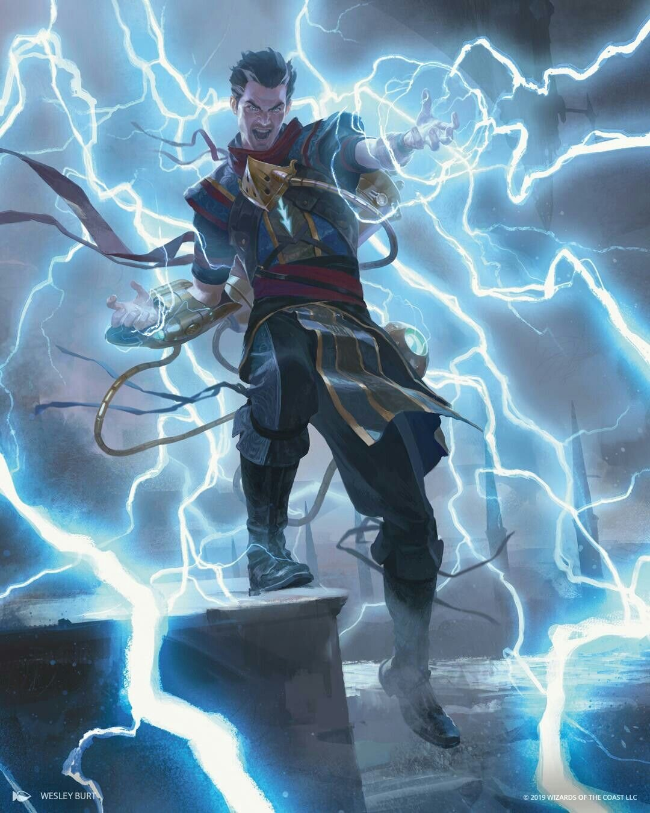

How I Optimize My Characters
My favorite ways to play cleric in Baldur's Gate 3.
Choose Your Class
Cleric Build
Harnessing the Storm
Focus on maximizing lightning damage by combining the Tempest Domain's Destructive Wrath with spells that create the wet condition.
Tempest Cleric of the Storm
This build utilizes the Tempest Cleric's Destructive Wrath in combiniation with the wet affect to deal doubled AND maximumed damage with lightning spells
View Build

Tempest Cleric of the Storm Build
Race:
Races don't really matter that much, just go for something pretty hehe :3
Ability Scores:
Prioritize Wisdom, Constituion, and some Dexterity
Key Spells:
- Call Lightning
- Thunderwave
- Create Water
- Any other lightning spells, especially AoE
Items
- Markoheshkir Staff: Not only does it give a free cast of any spell, but also gives two powerful lightning spells per short rest
- Lightning Staff: 1 extra lightning damage per attack which will be doubled

Additional Tips
A level 1 dip into Wizard greatly increases the strength of this build allowing you to learn any spells in the game using a spell scroll,
you can also pick up some useful level 1 spells and cantrips such as shocking grasp.